Role Visual director, Post production Year 2020-2022Participated in the overall production of Kyejeol Live, a YouTube live music platform, spanning from initial concept planning through post-production. Key responsibilities included visual directing, graphic title design planning, and color grading. The project explored the conversion of 'music to be heard' into 'music to be seen,' serving as a creative response to the absence of concerts and travel during the pandemic. Visuals were directed to harmonize artists with natural landscapes, emphasizing seasonal colors and the time of day to precisely match the music's mood.
9nam ‘Summer Night’
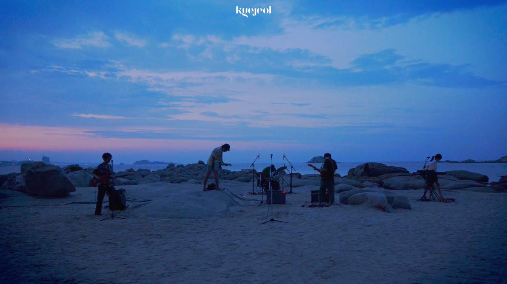
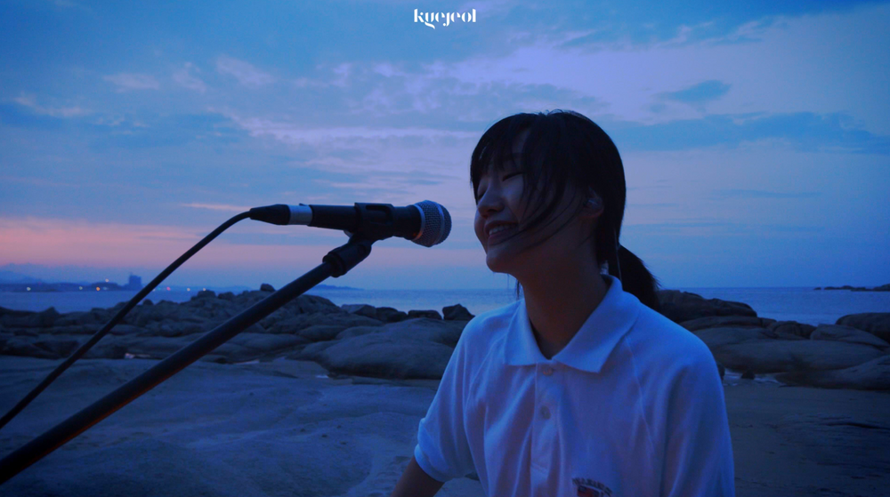
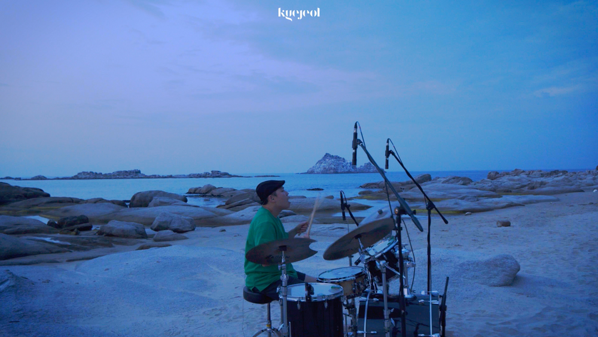
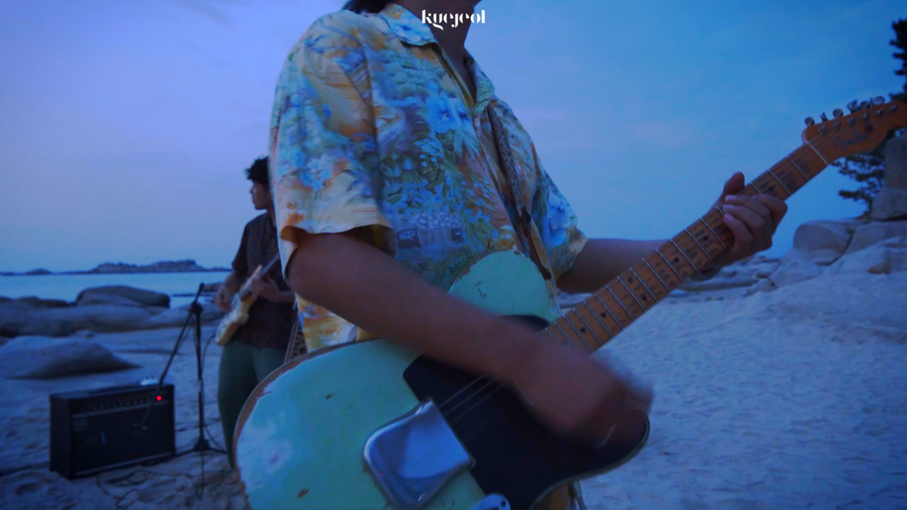
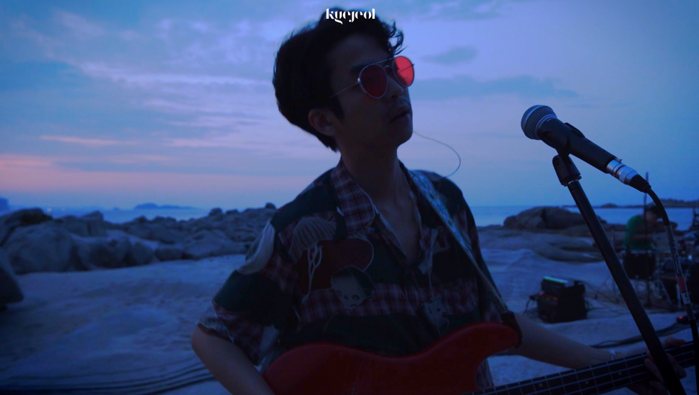
Visual Director : Hyunjin Kim Post Production : Hyunjin Kim Title Design : Dohee Kim
Idiotape ‘Too old to die young’, ‘Melodie’, ‘Future that never comes’
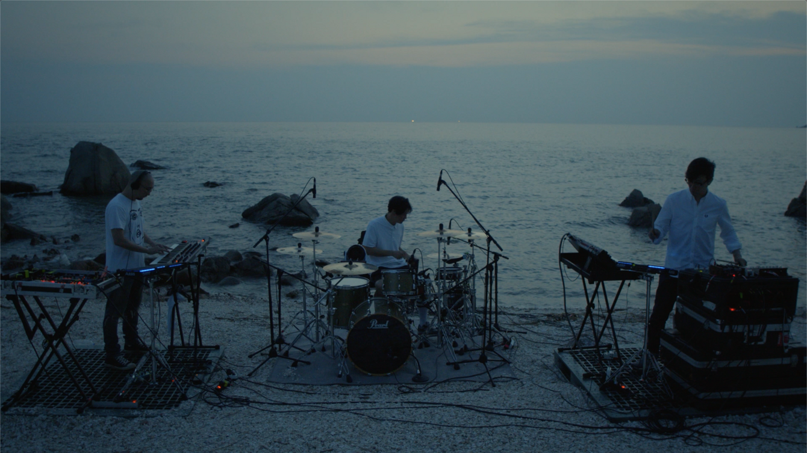
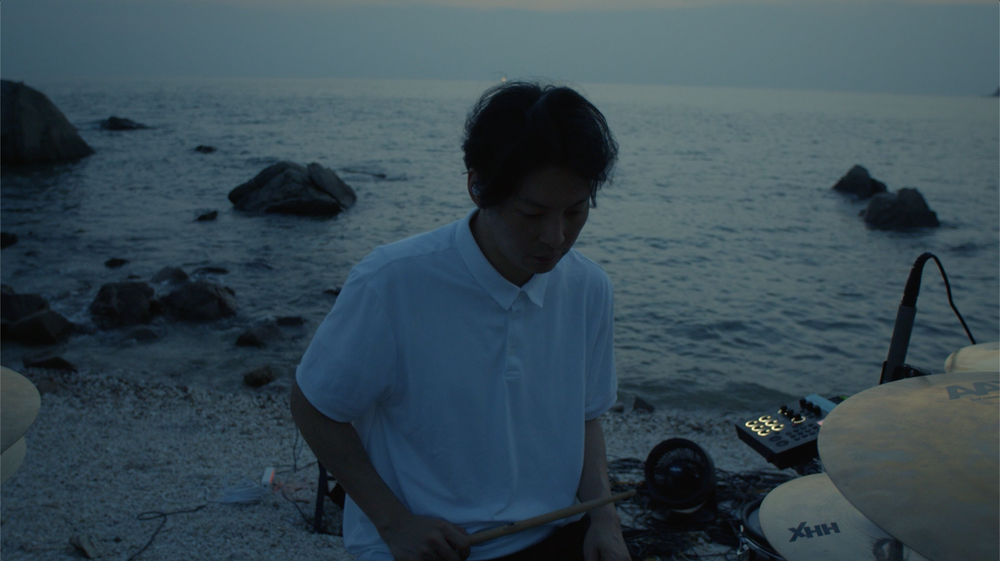
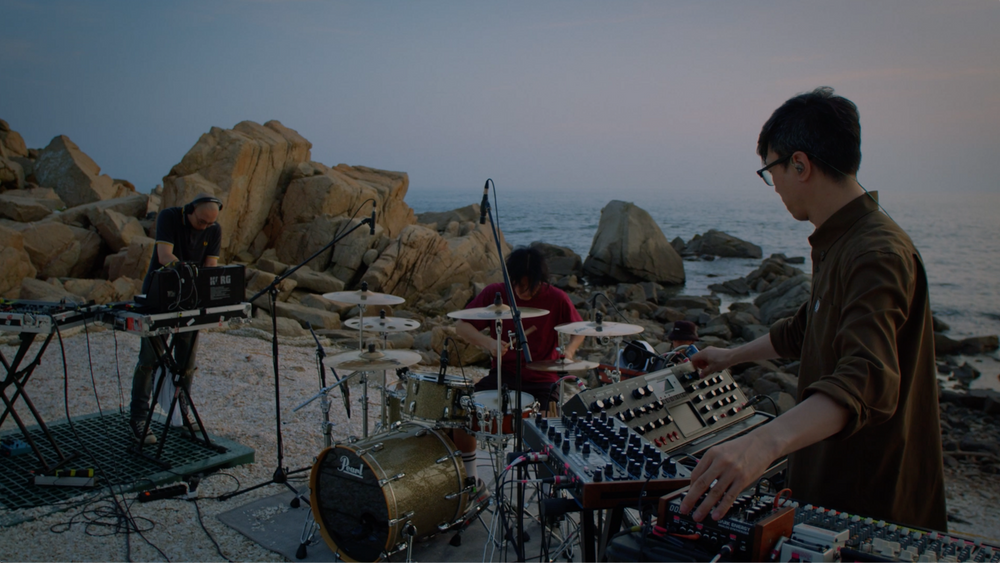
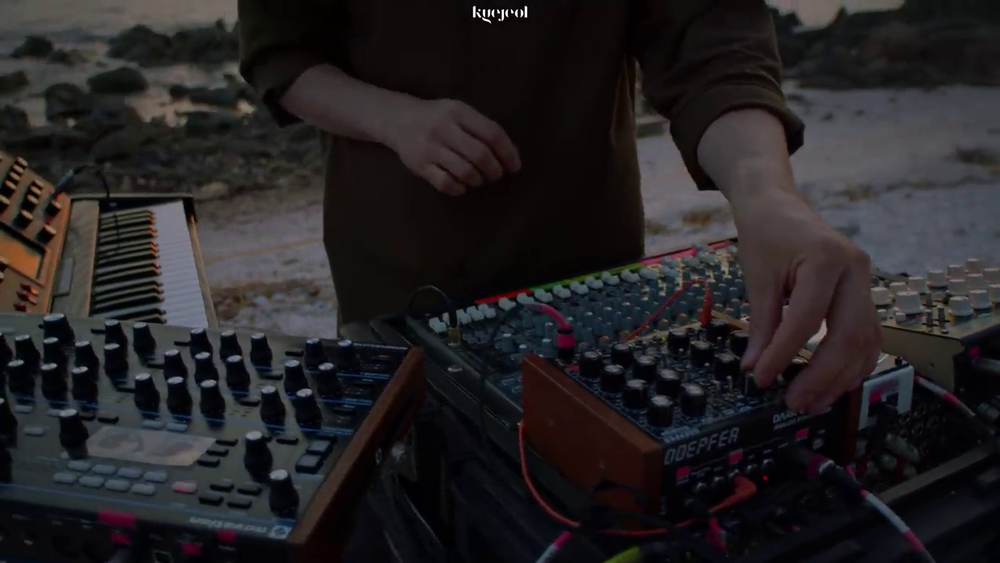
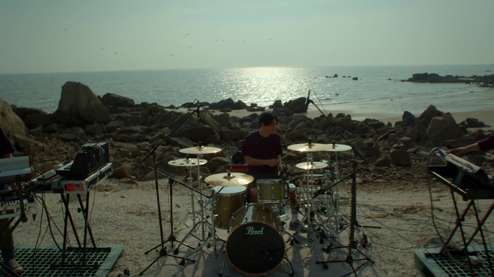
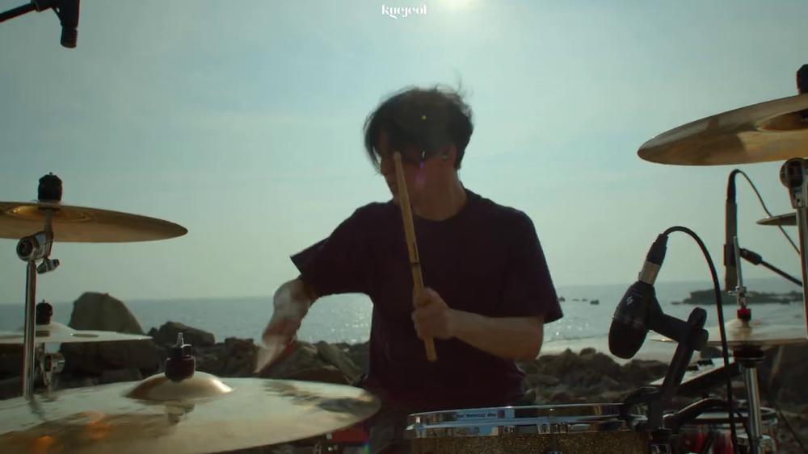
Visual Director : Hyunjin Kim Post Production : Hyunjin Kim Title Design : Hyunjin Kim
Samui ‘봄비’, ‘그럴 때가 있지’, ‘신기루’
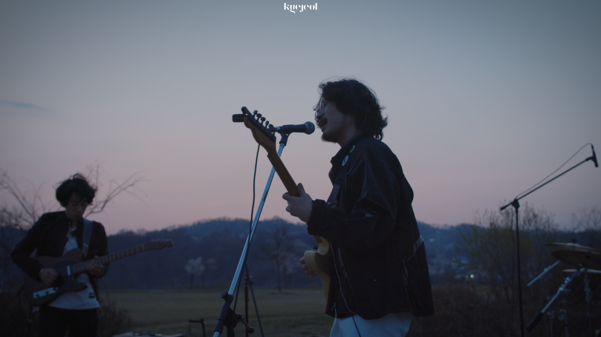
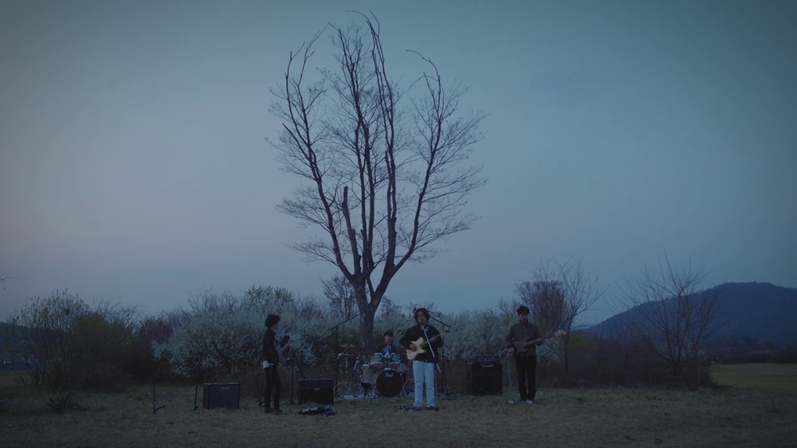
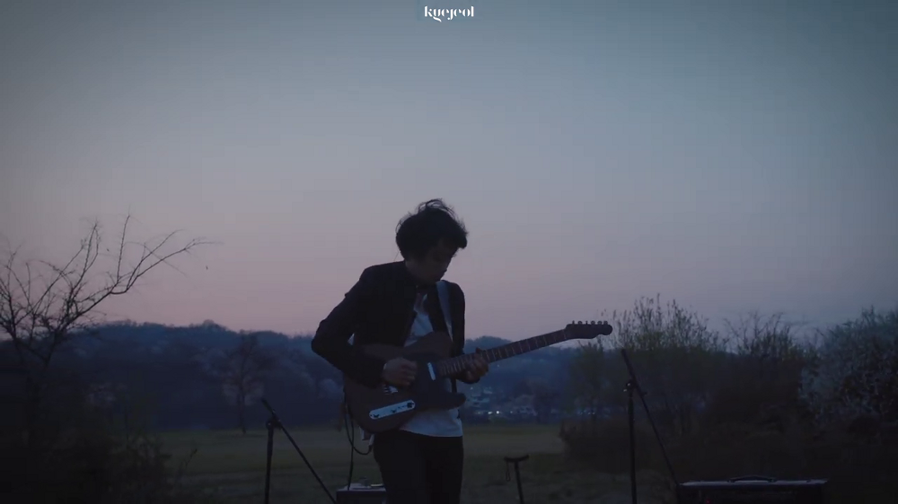
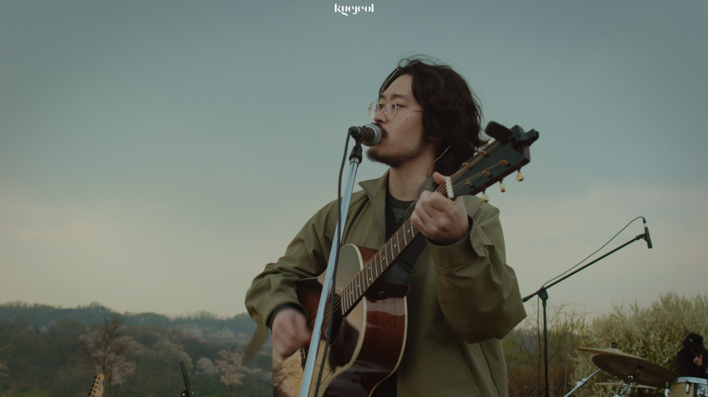
Visual Director : Hyunjin Kim Post Production : Hyunjin Kim Title Design : Dohee Kim